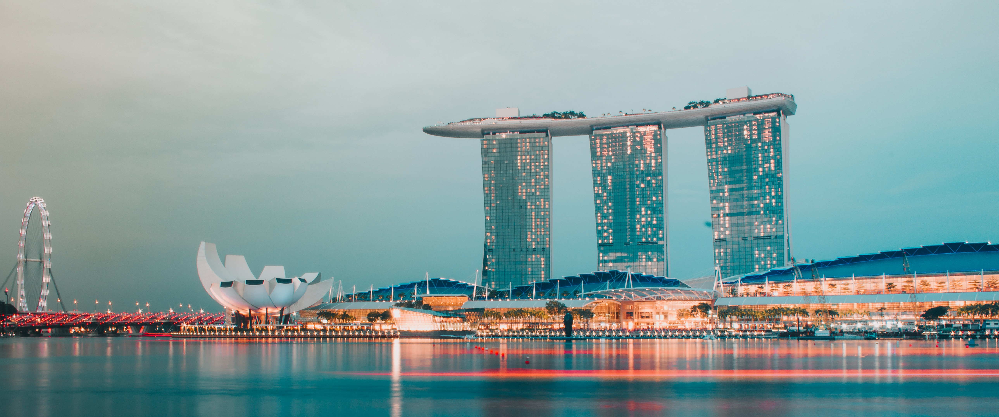

Travel GO
- Travel& History
- Taiwan -Taipei
- South Korea -Seoul
- Singapore
- Finland
#Singapore

Singapore , officially the Republic of Singapore, is a sovereign island city-state in Southeast Asia. The country is situated about one degree (137 kilometres or 85 miles) north of the equator, at the southern tip of the Malay Peninsula, with Indonesia's Riau Islands to the south and Peninsular Malaysia to the north. Singapore's territory consists of one main island along with 58 other islets. Since independence, extensive land reclamation has increased its total size by 23% (130 square kilometres or 50 square miles).